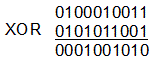

<div id="jsn-maincontent" class="span9 order1  row-fluid">
					<div id="jsn-maincontent_inner">
						<div id="jsn-centercol"><div id="jsn-centercol_inner">
									<div id="jsn-mainbody-content" class=" jsn-hasmainbody">
								<div id="jsn-mainbody-content-inner1"><div id="jsn-mainbody-content-inner2"><div id="jsn-mainbody-content-inner3"><div id="jsn-mainbody-content-inner4" class="row-fluid">
								
										
								
								<div id="jsn-mainbody-content-inner" class="span12 order1 ">
		
										<div id="jsn-mainbody">
										<div id="system-message-container">
	</div>

										<div class="item-page" itemscope itemtype="https://schema.org/Article">
	<meta itemprop="inLanguage" content="en-GB" >
	
		
						
		
	
	
		
								<div itemprop="articleBody">
		<p></p>
<h1 style="text-align: center;">Logical operations and encryption</h1>
<p class="NormalContent"><strong><strong>Introduction<br></strong></strong>There are some interesting things you can do using logical operations in encryption.</p>
 
<p><strong>XOR</strong><br>XOR is the Exclusive OR Boolean operator. In other words, if you have two inputs, the output is a one <strong><em>only</em> </strong>if either input is a one (but if both inputs are a one or both inputs are a zero, then the output is a zero).</p>
<p>Now imagine you have <span style="line-height: 16.3636360168457px;">this data 0100010011 that you want to encrypt. You are going to use this</span>&nbsp;encryption key: 0101011001 to encode it. Let's use an XOR gate to do this:</p>
<p></p>
<p>Our encrypted data is now 0001001010. The only way we can decrypt this is if we know what the original key was and using an XOR gate again. Let's decrypt this using the original key and an XOR gate. We get:</p>
<p></p>
<p>As you can see, we now have the original data back again. This method of encryption using XOR works well because you need both the data and the key to encrypt and decrypt the message. You could easily apply this system to a message by creating a key and then XORing it to the ASCII codes of the&nbsp;<span style="line-height: 16.3636360168457px;">string of characters in the message. If your message was longer than the key, you could implement various systems to deal with this, but the easiest method is simply to repeat the key to make it as long as you need it to be. The original key could be created using a random stream of ones and zeros to ensure that there is no accidental pattern chosen in the key.&nbsp;</span>&nbsp;</p>
<p></p>	</div>

	
							</div>

									</div>
				
							</div>
							
				        							
							
							</div></div></div></div></div>			
							
							
		        				</div></div> 
				</div></div>